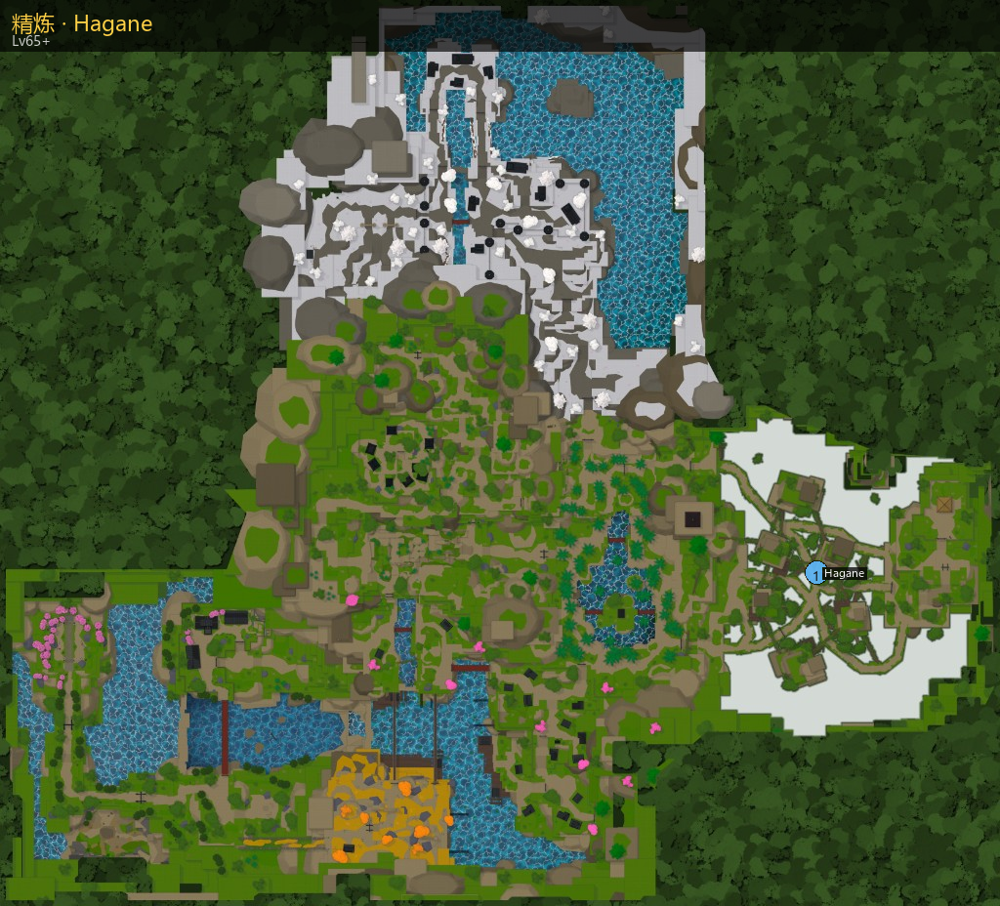

精炼
精炼师 Refiner Hagane（隐雾村）· 需求等级 65。
坐标约 1865.3, 694.0, -434.3

- 可精炼：物品需 HasCombat + ActiveToolStats，且 RefineStats 指向的属性非 0（默认至少 Additional Damage）。
- 主属性（RefineStats 第 1 项）按 Multipliers 全额放大；第 2 项及以后按 (倍率-1)/2+1 半额放大。
- 概率单位为万分比（Bp），Fail+Success+Great=10000。使用精炼守护时 Great 概率 ×1.5，并从 Success 挪出差额。
- 缺神话矿时可用 5 普通精炼矿 → 1 神话矿 折算（SmeltRate）。
守护道具：Refinement Guard · 熔炼：Refinement Ore×5 → Mythic Refinement Ore×1